Quick start
The four jobs done most often. Each one is explained in full in the sections that follow.
From letter to decision
- Screening → Letters → New letter, attach the scans
- Decisions → New decision: type, official number, scope, parties
- Save
- In the Decisions list press Run
Publish to the Final List
- Open the task from the Workflow inbox
- Check the decision against its letter and parties
- Reviewer: Accept review · Approver: Approve and publish
- Or Return to data entry with the reason
Screen a customer
- Sign in: password, then the 6-digit app code
- Screening Portal → New inquiry
- Name, identity type and number, purpose
- Screen; keep the certificate if needed
Bill and collect
- End of Day issues each invoice at the end of the company's period
- Billing → open the invoice
- Record payment when the money arrives
- The GL entries post at once
About this manual
Screening checks customers against the Federation Final List: the people and companies named in a formal legal decision or a court decision. It has three parts:
| Part | Who uses it | What it does |
|---|---|---|
| Screening back office (inside FINOVA) | Federation staff | Letters, decisions and their approval, the Final List, member companies and licences, billing, End of Day, e-mail, sign-in log and audit. |
| Screening Portal | Member company users | Screen customers, see past inquiries and certificates. Company administrators also manage their users and see their invoices and sign-ins. |
| Screening API | Member companies' systems | Screen customers automatically from the company's own applications (section 13). |
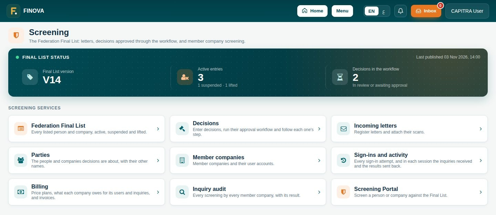
The manual uses one company throughout, National Finance Co (NFC), and one listed person, Mahmoud Hassan Ali, so the figures connect.
Key concepts
The Final List
- Holds only people and companies for whom there is a formal legal decision or a court decision.
- Every approved decision publishes the next version of the list (14, 15, …). Each inquiry records the version it was checked against.
- Nothing reaches the list without three different people: one enters the decision, a second reviews it, a third approves it.
1. Enter and Run
Registers the letter, enters the decision and its parties, then presses Run.
2. Review
Checks the decision against the letter. Accept sends it for approval; Return sends it back.
3. Approve and publish
Publishes it as the next Final List version, or returns it.
Decision types
| Type | Effect on the Final List | What screening returns |
|---|---|---|
| Listing | Adds its parties to the list. | Match |
| Amendment | Changes the scope text of the listing it names. | Match |
| Suspension | The entry shows Suspended; the person stays on the list. | Match |
| Lifting | The entry shows Lifted and stays as history. | Previously listed |
Screening results
| Result | Meaning | What to do |
|---|---|---|
| Match | A listed (or suspended) entry matches the identity number. | Do not proceed; follow your compliance procedure. |
| Possible match | The name matches but the identity number does not. | Check the customer's documents against the entry before deciding. |
| Previously listed | Only lifted entries match. | The person is no longer listed; keep the result on file. |
| No match | Nothing on the list matches. | Proceed. |
Signing in and two-factor
Activating an account
- A new user receives an activation e-mail. The link opens a page where the user chooses a password.
- Activation and password-reset links work once and expire after 48 hours. Sending a newer link voids the older one.
- If the user name was left empty, the e-mail address is the user name.
- Forgot password always shows the same message, whether or not the account exists.
Two-factor verification (every member company account)
- At the first sign-in a QR code appears. Scan it with an authenticator app (Google Authenticator, Microsoft Authenticator, Authy…).
- Type the 6-digit code the app shows.
- You are shown 10 backup codes in the form
XXXXX-XXXXX. Print or store them: they are shown only once. - Every later sign-in: password, then the current 6-digit code.
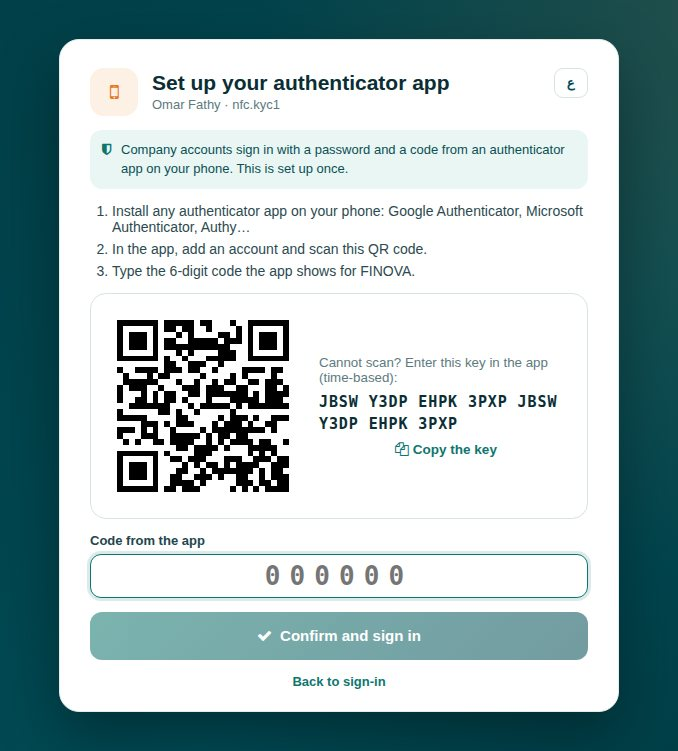
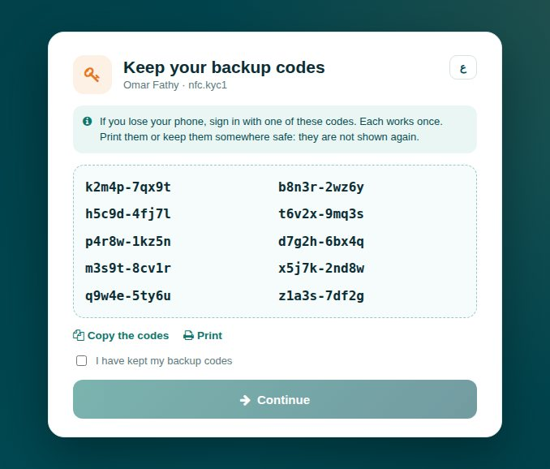
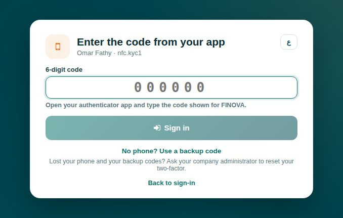
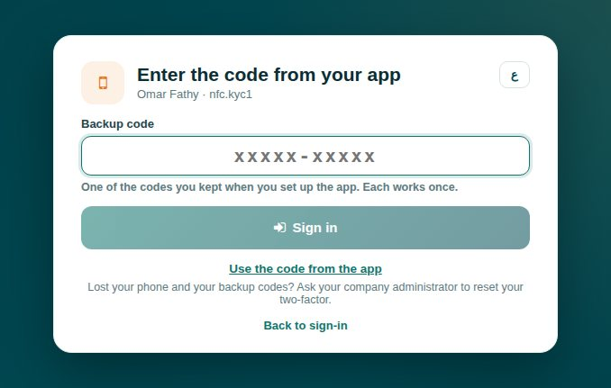
Limits that protect accounts
| Rule | Value |
|---|---|
| Time to enter the code after the password | 5 minutes, then sign in again |
| Wrong codes before the account locks | 5, then locked for 15 minutes |
| Session | 60 minutes |
| Sign-in pages | 30 requests a minute per network address |
| Network block | 20 failed sign-ins within 15 minutes block that network address |
Ask for a two-factor reset. The Federation can reset any user; a company administrator can reset the company's other users (Users → Reset two-factor). The user sets the app up again at the next sign-in. Every reset is recorded in the sign-in log.
Letters
Every decision comes from an official letter. Screening → Letters (SCR.LETTER.EDIT) keeps the letters with their scans.
- Press New letter.
- Enter the sender (court or authority), the sender reference, the channel (Courier, Email, By hand, Portal) and the letter date.
- Drop the scans: PDF, PNG, JPEG or TIFF, up to 20 MB each. Each file is kept with its SHA-256 fingerprint, so it can be proved unchanged.
- Save. The letter gets its number, e.g.
LTR-2026-000004.
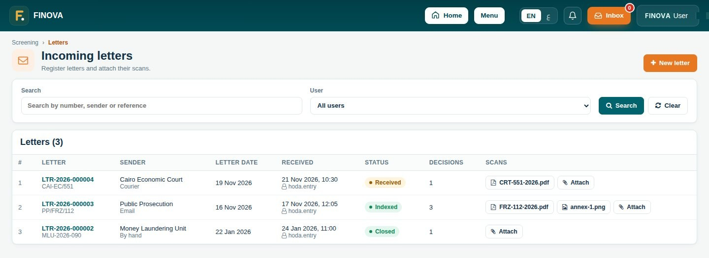
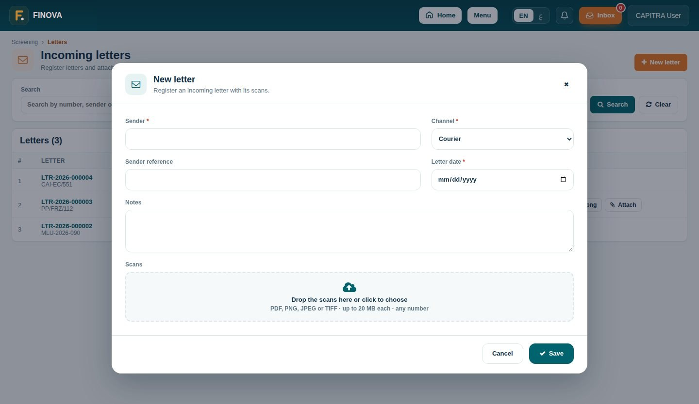
Decisions and approval
Enter a decision
- Screening → Decisions → New decision (SCR.DECISION.EDIT).
- Choose the type. For an amendment, suspension or lifting, choose the listing it changes.
- Enter the official number, the effective date, the scope and the letter.
- Add the parties: Arabic and English name, identity type and number, nationality, birth date and every known other name. Other names are searched like the main name.
- Save. The decision waits in the list as Workflow not started.
- Press Run in the Decisions list. The approval workflow starts and the decision goes In review.
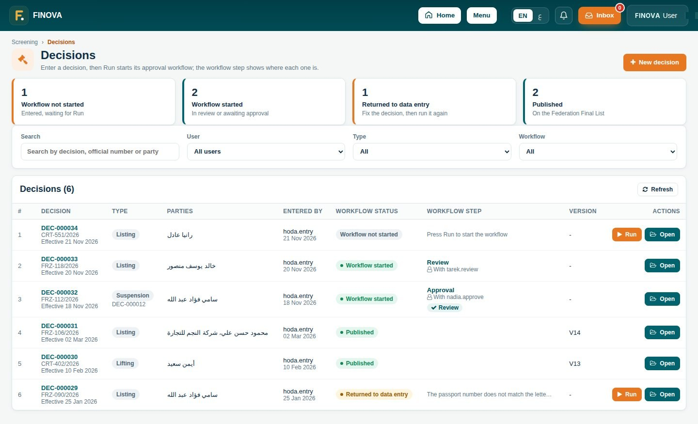
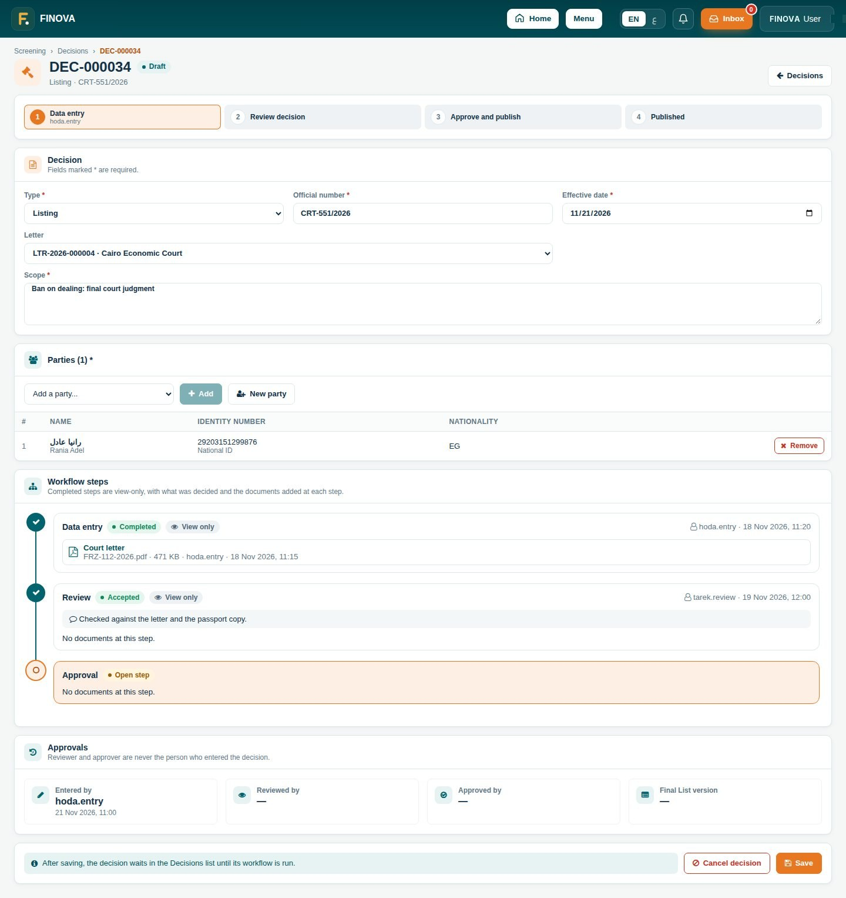
Review and approval
The reviewer and approver open their task from the Workflow inbox. The decision opens with the task panel:
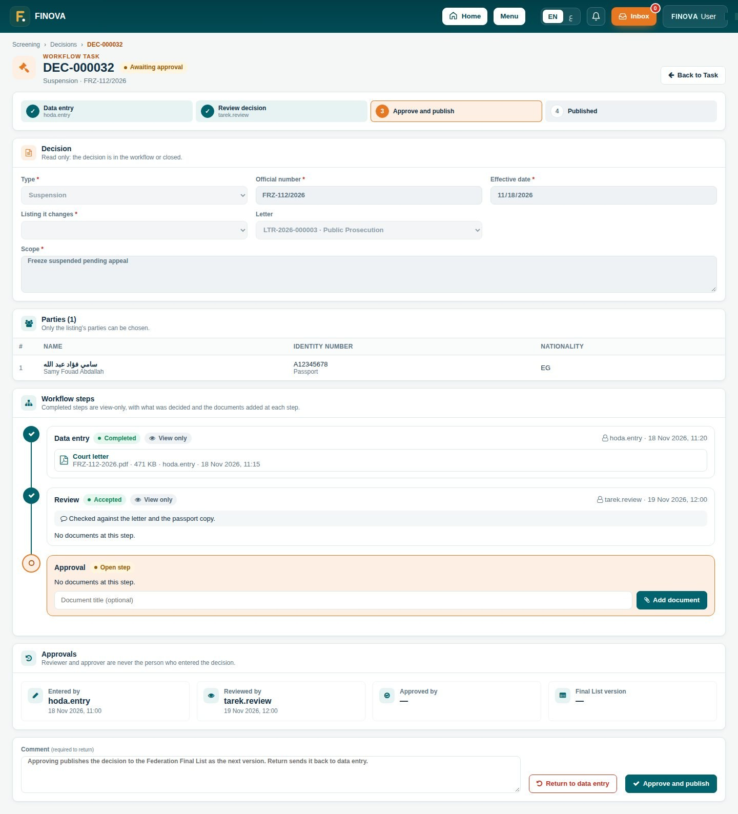
The reviewer and approver are never the person who entered the decision, and the approver is never the reviewer. A decision that should not go ahead can be cancelled; it is kept, never published.
The Final List and matching
Screening → Final List (SCR.DECISION.VIEW) shows every listed person and company, active, suspended and lifted, with the decision behind each entry and the version in force.
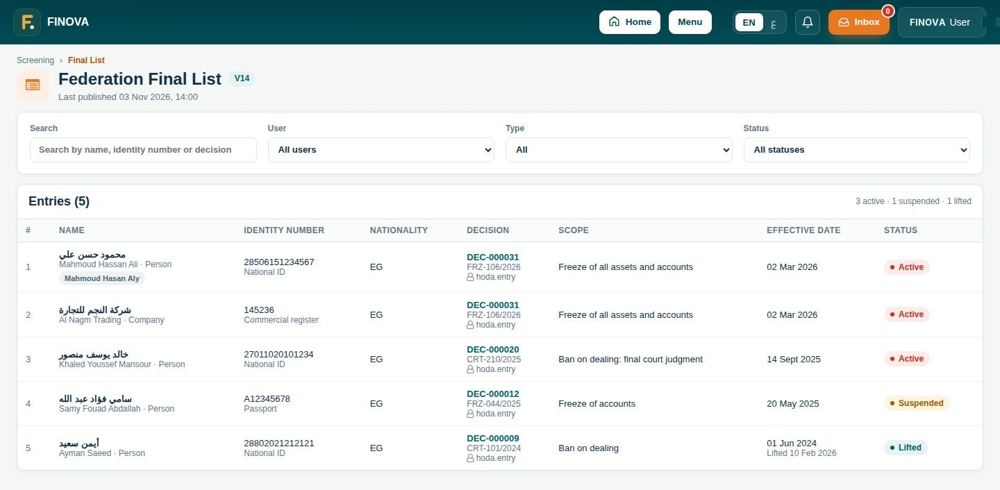
How a customer is matched
- Identity number: compared ignoring spaces, dashes and leading zeros, so
2850615-1234567and28506151234567match. - Name: compared with the Arabic name, the English name and every other name. A similarity of 85% or more is a name hit.
- Birth date: a name-only hit is dropped when both birth dates are known and differ.
- Each hit shows its basis: Identity and name, Identity only or Name only.
Member companies
Screening → Member companies (SCR.COMPANY.ADMIN): each company with its licence, administrator, users and API clients.
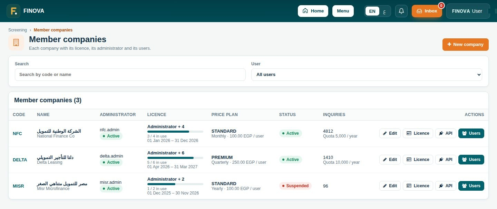
Add a company
New company creates the company, its licence and its administrator in one step. The administrator receives the activation e-mail and then manages the company's own users from the portal. On the Billing part choose the price plan and how often it is invoiced: monthly, quarterly or yearly.
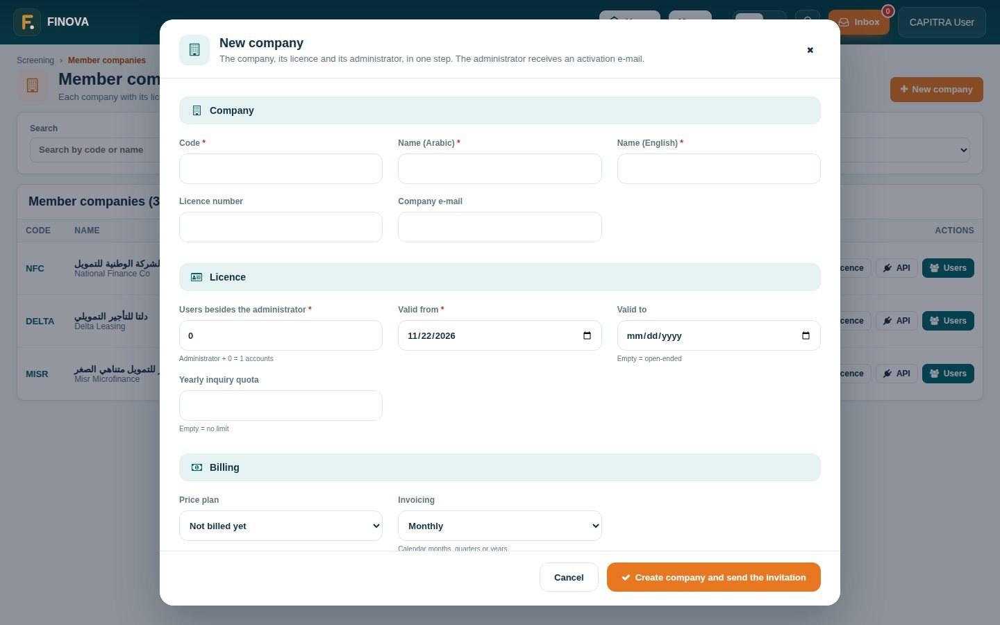
Licences
| Item | Meaning |
|---|---|
| Valid from / to | The licence year starts on the licence's start day, not on 1 January. Empty end = open-ended. |
| Users besides the administrator | The licence covers the administrator + X users. A user waiting for activation holds a seat. |
| Yearly inquiry quota | Counted per licence year. When used up, screening is refused until the next licence year or a new licence. Empty = no limit. |
Licence changes the users or the dates as a new licence; earlier licences are kept. End of Day e-mails the company before its licence ends (section 10). From the day after the end, its users can no longer sign in or screen. Companies created before licences existed were given an opening licence.
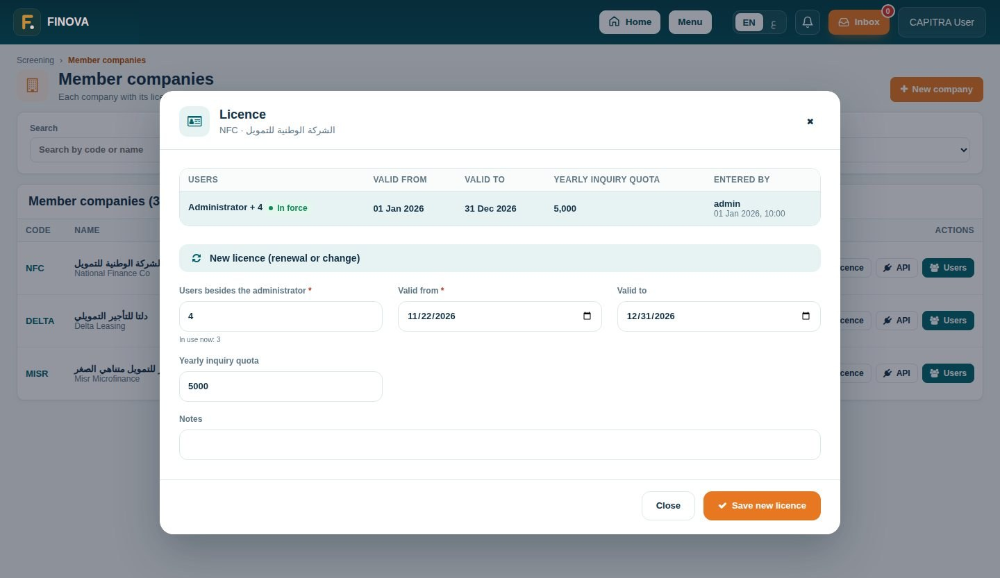
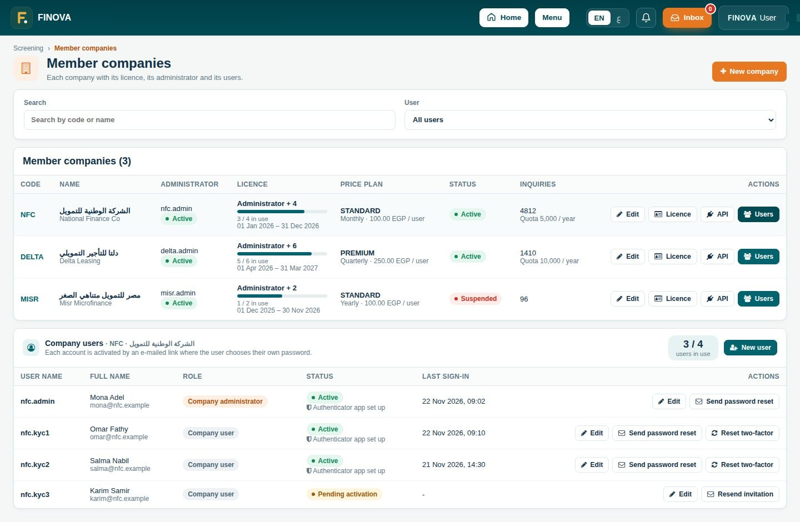
Setting a company's status to Suspended stops its users and API clients at once; the sign-in log shows Company blocked. Set it back to Active to restore access.
API clients
- Press API on the company, then New client and give it a name (e.g. Core banking onboarding).
- The client ID and client secret are shown. The secret is shown only once: copy it and hand it over securely.
- New secret replaces a lost or exposed secret; the old one stops working at once.
- Revoke stops the client for good; it is kept with its inquiries.
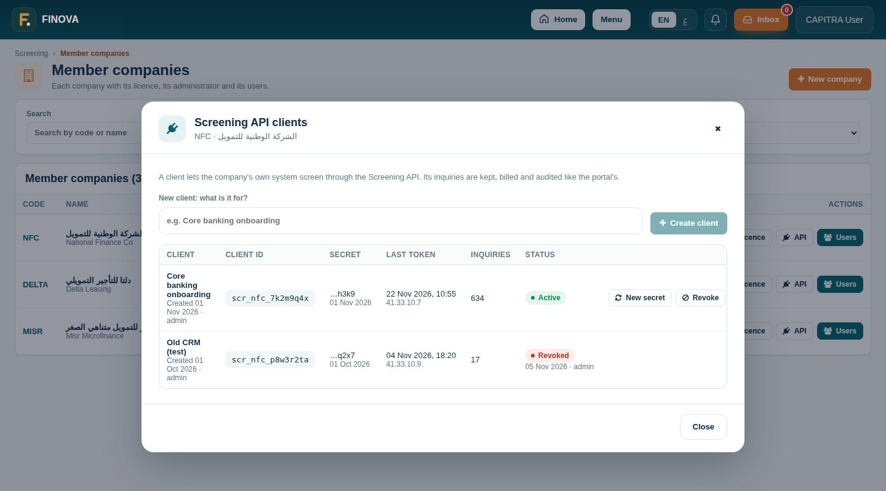
The Screening Portal
Member company users screen their customers here (SCR.INQUIRY.CREATE). The top shows the company and the inquiries left this licence year.
- On New inquiry choose Person or Company.
- Enter the full name as on the identity document (Arabic or English), the identity type and number. Add the nationality and birth date when you have them: they cut false possible matches.
- Choose the purpose: customer onboarding, transaction, periodic review or other, and your case reference if you like.
- Press Screen. The result appears at once with any matching entries.
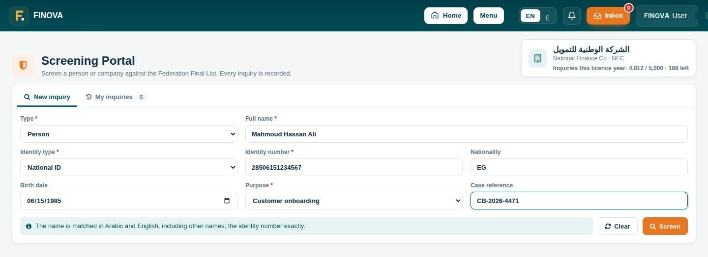
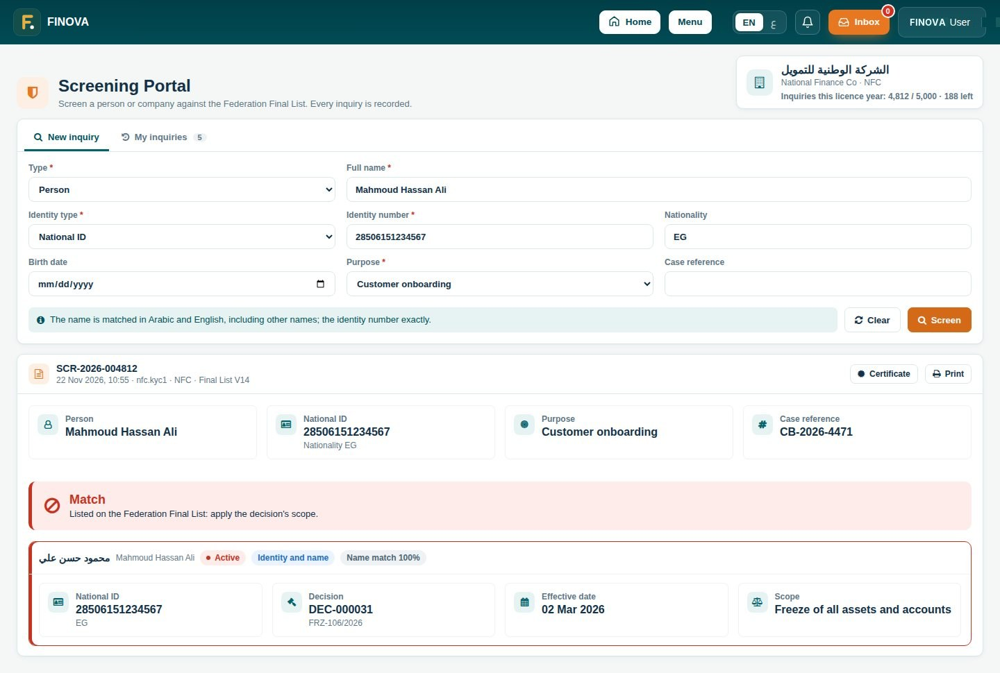
My inquiries lists earlier inquiries. View shows one again; the certificate is a printable page (Print / PDF) with the result, the Final List version and the inquiry's seal.
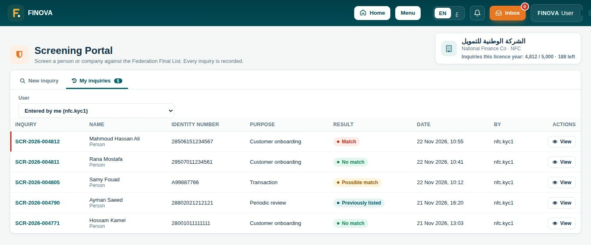
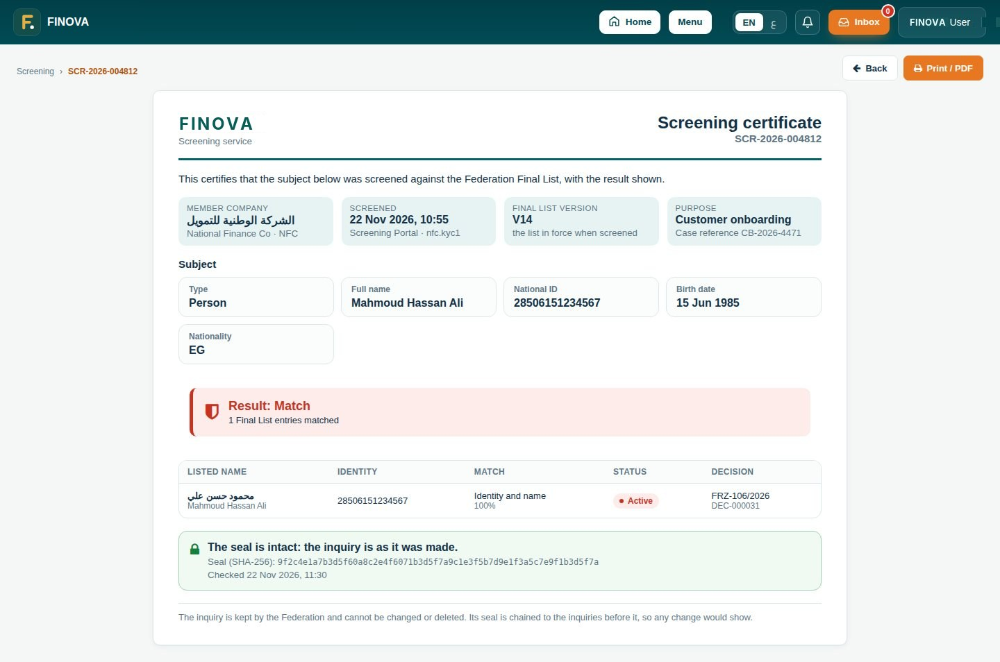
For company administrators
With SCR.COMPANY.USERS the portal shows three more tabs:
| Tab | What you can do |
|---|---|
| Company users | Add users within the licence's seats, deactivate them, send the activation link again, reset two-factor for the other users. |
| Invoices | The company's invoices with what is paid and due; open and print each one. |
| Sign-ins | Every sign-in of the company's users, the result, and the inquiries made in each session. |
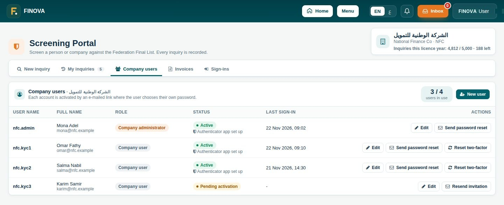
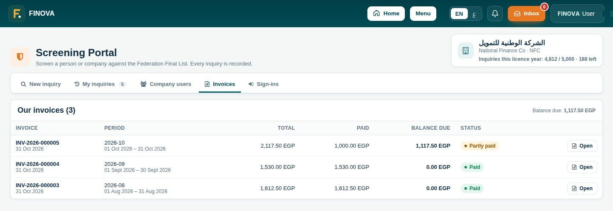
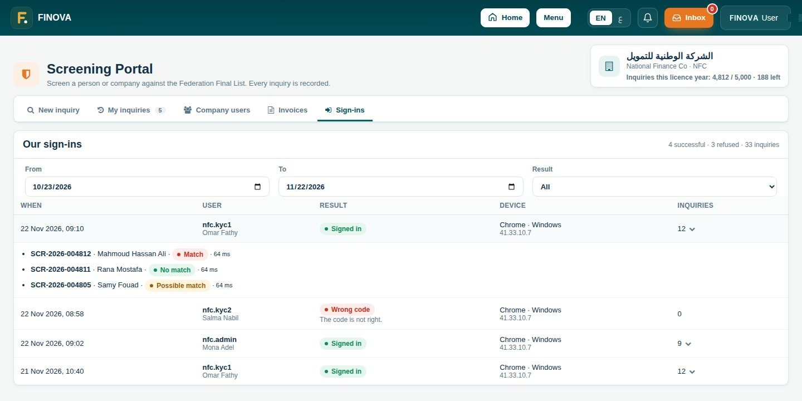
Billing and GL
Price plans
Screening → Billing → Price plans (SCR.BILLING.MANAGE). A plan sets, in EGP:
- a fee per user per month: a user active on any day of a month pays the month; the administrator counts;
- free inquiries per invoice period (0 = none);
- the inquiry price: one price per inquiry, or tiers where the price changes with the number of inquiries in the period.
Every inquiry counts, whatever its result, portal and API alike. API clients pay no user fee. No VAT is charged. New prices apply to invoices issued from then on.
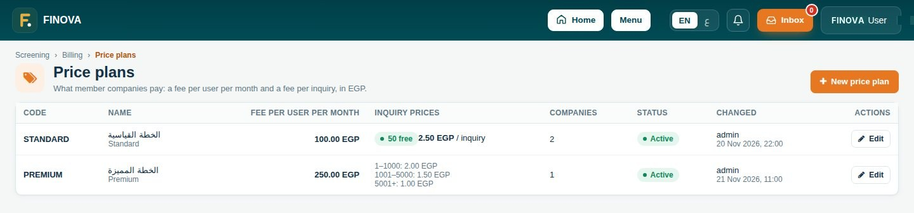
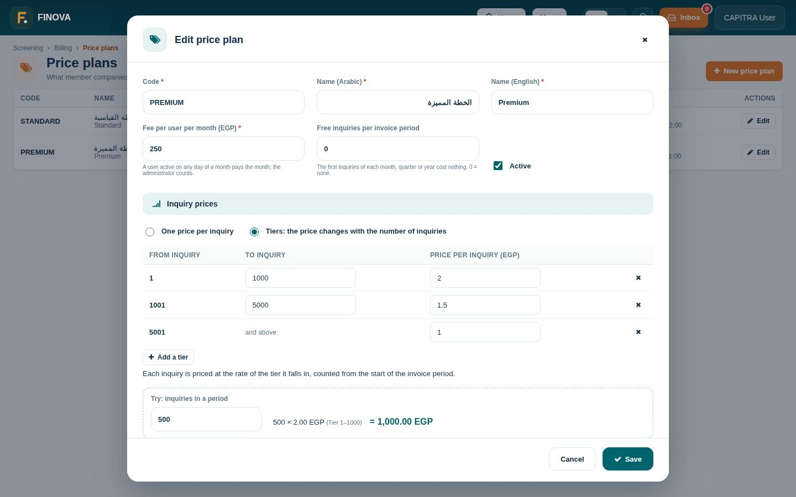
Invoices
Each company is invoiced monthly, quarterly or yearly. The invoice is issued at the end of the company's period, which is not always the end of a calendar month:
- by End of Day, on the last day of the period (job
SCR_INVOICES), or - by hand with New invoice on Billing.
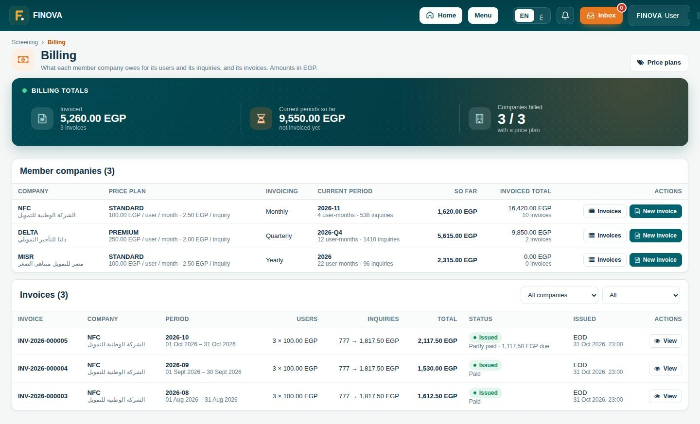
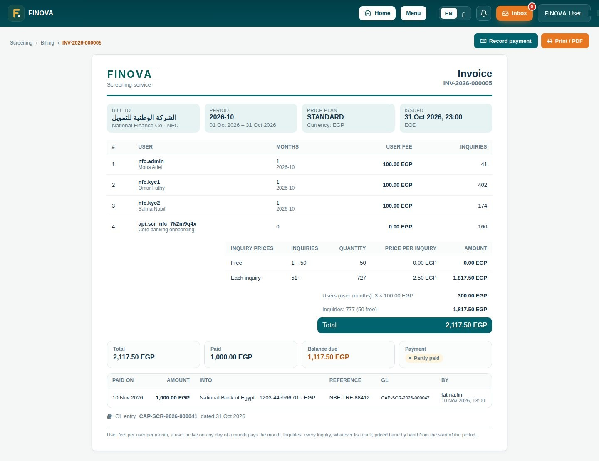
Payments and cancelling
- Record payment: date, amount, the bank account the money came into and the bank reference. A part payment leaves the rest due.
- Cancel invoice keeps the invoice, marked cancelled with the reason, and reverses its GL entry today. Its period can then be invoiced again. An invoice with payments cannot be cancelled.
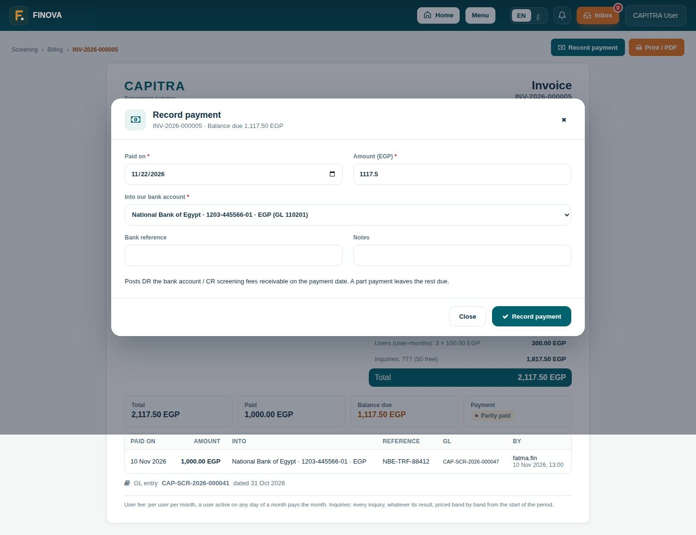
GL entries
Product SCR_SERVICES, GL code SCR. Entries are numbered CAP-SCR-… and post at once, without waiting for End of Day.
| Event | Rule | Debit | Credit |
|---|---|---|---|
| Invoice issued | SCR_INVOICE | 120701 Screening fees receivable | 410701 User fee income · 410702 Inquiry fee income |
| Payment received | SCR_PAYMENT | The bank account's GL account | 120701 Screening fees receivable |
| Invoice cancelled | reversal | The invoice's entry reversed on the cancel date | |
The invoice entry is dated the last day of the period, or the issue day when the invoice is issued before the period ends.
End of Day
End of Day is the night batch of every FINOVA application (EOD.VIEW, EOD.RUN, EOD.JOBS.EDIT). An administrator runs it:
- One day: the next day to run, or
- Several days, up to a date: every day from the next one, in order. It stops at a day where a job fails. Days never run ahead of today.
| Order | Job | What it does | Setting |
|---|---|---|---|
| 10 | LND_DAILY | Retail Lending: daily accrual and arrears. | – |
| 20 | SCR_LICENCE_EXPIRY | E-mails the company administrator and contact e-mail before the licence ends and on its last day. | Reminder days, default 30,7,1 |
| 30 | SCR_INVOICES | Issues and posts the invoice of each company whose period ends that day. | Issue invoices of zero, default N |
| 40 | SCR_HOUSEKEEPING | Closes sign-ins left waiting for the code (Code not entered); counts accounts whose activation link expired. | – |
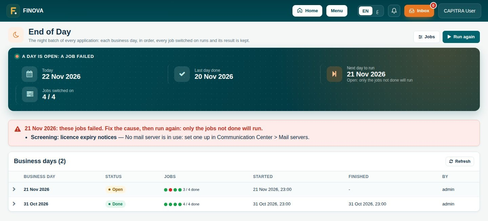
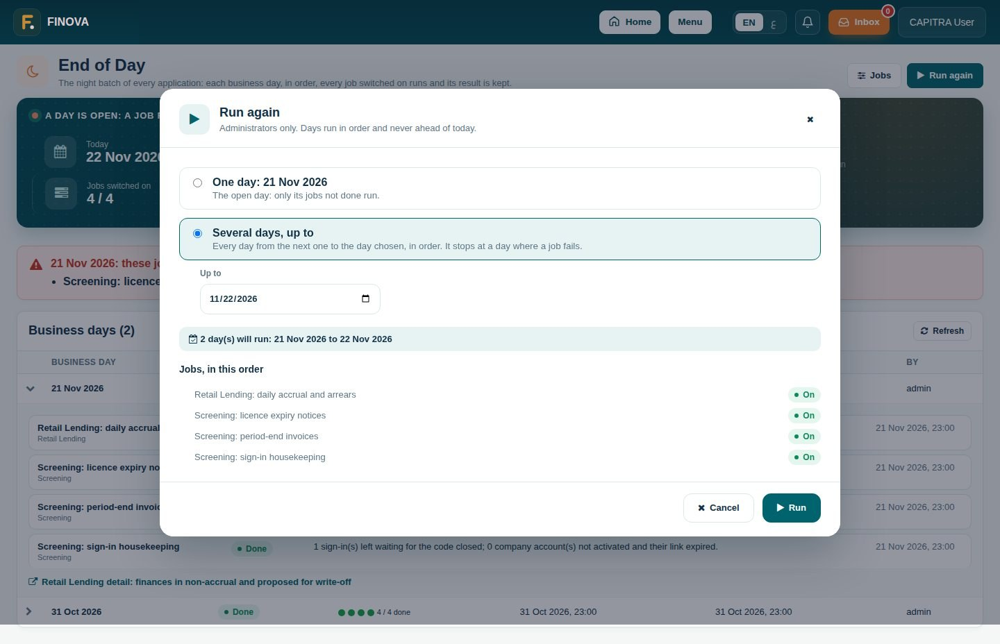
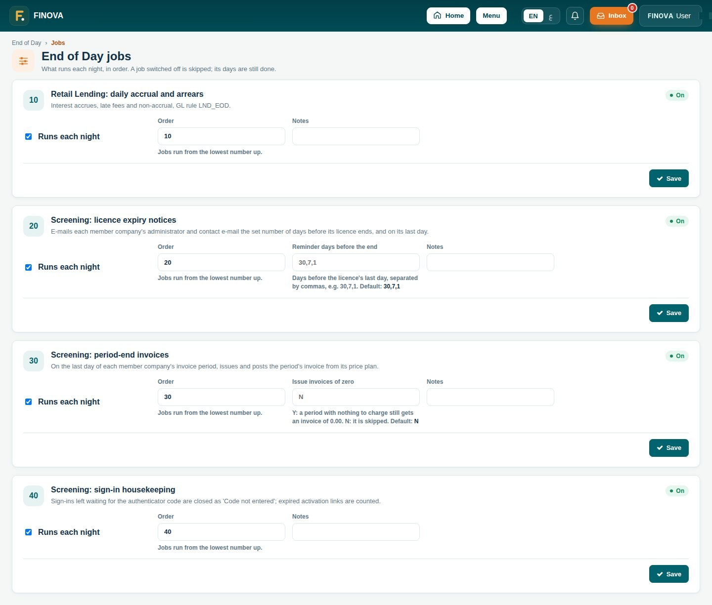
The other jobs still run, but the day stays open. Read the job's message, fix the cause, and press Run again: only the jobs not done run, so nothing is posted twice.
Communication Center
Every system e-mail goes through here: activation and reset links, licence reminders, invoices.
- Communication Center → Mail servers → New mail server (CMC.MAIL_SERVER.EDIT): host, port, SSL, user name, password, sender name and address.
- Send a test e-mail. A server must pass a test before Use this server is available.
- Use this server makes it the one that sends.
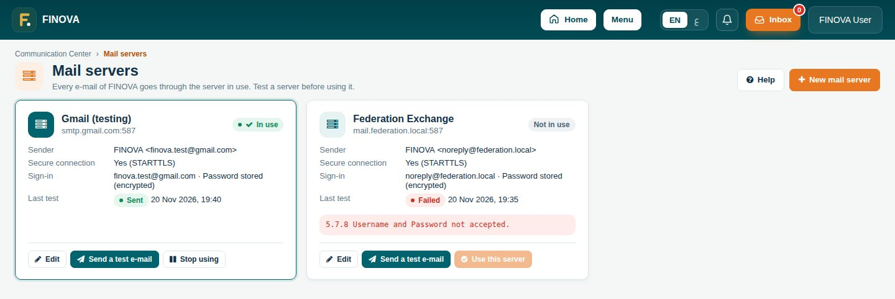
Turn on 2-Step Verification in the Google account and create a 16-letter app password; use it instead of the normal password. Host smtp.gmail.com, port 587, SSL on. For tests, name+bank1@gmail.com reaches name@gmail.com, so many test users can share one mailbox.
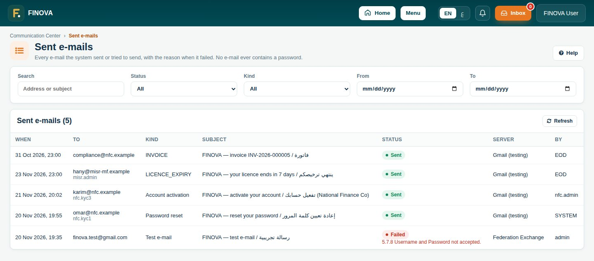
Sign-ins, audit and security
Sign-ins and activity
Screening → Sign-ins and activity (SCR.ACCESS_LOG.VIEW): every sign-in attempt with user, company, time, network address, device and result; open a session to see the inquiries made in it.
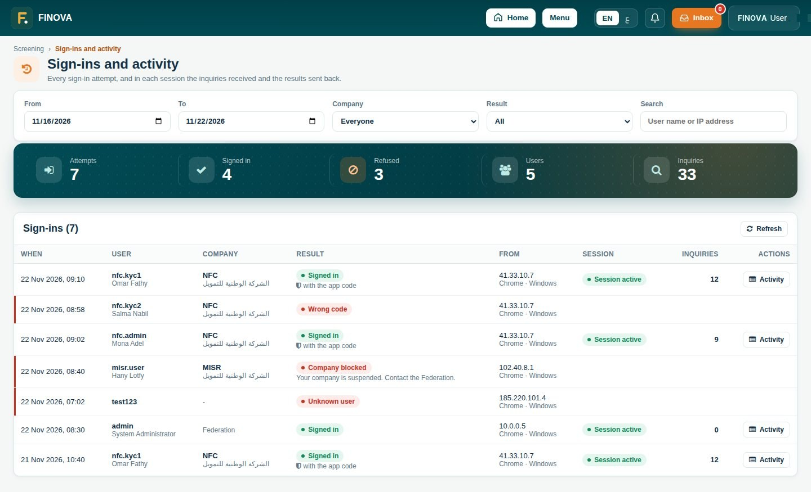
Inquiry audit and seals
Screening → Inquiry audit (SCR.INQUIRY.AUDIT) lists every inquiry of every company, from the portal and the API.
- Each inquiry is sealed when made: a SHA-256 hash that also covers the seal of the inquiry before it, forming a chain.
- The database itself refuses any change to a sealed inquiry and any deletion.
- The certificate checks its inquiry's seal each time it opens. IT can check the whole chain with
GET /api/scr/inquiries/seal-check.
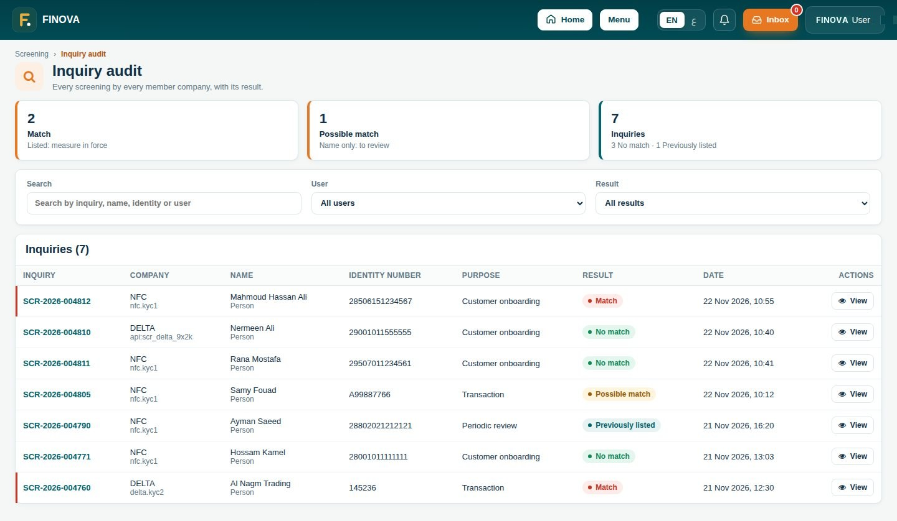
Built-in protections
| Protection | Limit |
|---|---|
| Portal screening | 30 a minute per user |
| Sign-in pages | 30 requests a minute per network address |
| Network block | 20 failed sign-ins in 15 minutes |
| Account lock | 5 wrong passwords or codes, 15 minutes |
| API | 60 calls a minute per client; 10 token requests a minute per network address |
Screening API (for IT teams)
A member company's own systems screen customers through the API. API inquiries are kept, sealed, billed and audited exactly like portal inquiries, and show in the company's history. The client must be active and the company's licence in force. All calls are HTTPS and JSON, field names in camelCase, times in UTC.
1. Get the credentials
The Federation creates the API client (section 7) and gives you the client ID and client secret. Keep the secret in your secrets vault, never in source code.
2. Get a token (valid 1 hour)
POST /api/scr/v1/token
Content-Type: application/json
{ "clientId": "scr_nfc_7k2m9q4x", "clientSecret": "••••••••" }
200 → { "accessToken": "eyJ…", "tokenType": "Bearer", "expiresIn": 3600, "expiresAt": "2026-11-22T10:15:00Z" }
Send it on every other call as Authorization: Bearer <accessToken>. Reuse it until shortly before it expires; do not ask for a token per inquiry.
3. Screen a customer
POST /api/scr/v1/inquiries
Authorization: Bearer eyJ…
{ "subjectTypeCode": "PERSON", "subjectName": "Mahmoud Hassan Ali",
"identityTypeCode": "NATIONAL_ID", "identityNo": "28506151234567",
"birthDate": "1985-06-15", "nationalityCode": "EG",
"purposeCode": "ONBOARDING", "purposeText": null, "caseReference": "CB-2026-4471" }
200 → { "inquiryRef": "SCR-2026-004812", "result": "MATCH", "listVersion": 14,
"screenedAt": "…", "channel": "API", "caseReference": "CB-2026-4471",
"hits": [ { "matchBasis": "ID_AND_NAME", "nameScore": 100, "entryStatus": "ACTIVE",
"decisionRef": "DEC-000031", "officialNo": "FRZ-106/2026", "scope": "…",
"listedFrom": "2026-03-02", "liftedOn": null } ],
"recordHash": "9f2c…" }
| Field | Required | Values |
|---|---|---|
subjectTypeCode | Yes | PERSON or COMPANY |
subjectName | Yes | Arabic or English name |
identityTypeCode | Yes | Person: NATIONAL_ID, PASSPORT, OTHER · Company: COMMERCIAL_REGISTER, OTHER |
identityNo | Yes | National ID 14 digits · passport 5–20 letters and digits · commercial register up to 15 digits · other 3–30 characters |
birthDate | No | yyyy-mm-dd, persons only |
nationalityCode | No | Two-letter country code (EG, SA…) |
purposeCode | Yes | ONBOARDING, TRANSACTION, PERIODIC_REVIEW, OTHER |
purposeText | With OTHER | Free text |
caseReference | No | Your own reference, returned with the result |
result is MATCH, POSSIBLE_MATCH, PREVIOUSLY_LISTED or NO_MATCH (section 2). Keep inquiryRef with your case: it names the sealed record.
4. Other calls
| Call | Returns |
|---|---|
GET /api/scr/v1/inquiries/{inquiryRef} | One of your company's inquiries, from the API or the portal |
GET /api/scr/v1/inquiries?from=2026-11-01&to=2026-11-22&take=100 | Your inquiries between two days (Cairo time), newest first; take default 100, at most 500 |
GET /api/scr/v1/quota | quota (null = no limit), used, left and the licence year from/to |
5. Errors and limits
| Status | error | Meaning · what to do |
|---|---|---|
| 400 | (per field) | A field is missing or wrong; the answer names each field. Fix it; do not resend unchanged. |
| 401 | invalid_client | Wrong client ID or secret, or the client is revoked (the same answer for all three). |
| 401 | – | Token missing or expired: get a new token. |
| 403 | company_blocked | The company is suspended or its licence has ended. |
| 403 | quota_reached | The licence year's quota is used up. |
| 404 | not_found · no_licence | No such inquiry for your company · no licence in force. |
| 429 | rate_limited | Too many calls: wait the seconds in the Retry-After header. |
Errors look like { "error": "quota_reached", "message": "…" }. Limits: 60 calls a minute per client; 10 token requests a minute per network address.
Reuse tokens. Retry a 429 only after Retry-After. Never retry a 400 or 403 unchanged. Treat POSSIBLE_MATCH as a case for a person to check.
Permissions, statuses and questions
Permissions
| Permission | Allows |
|---|---|
SCR.LETTER.EDIT | Register letters and attach their scans |
SCR.DECISION.VIEW | Read decisions and the Final List |
SCR.DECISION.EDIT | Enter decisions and Run their workflow |
SCR.DECISION.REVIEW | Review a decision (never one you entered) |
SCR.DECISION.APPROVE | Approve and publish (never one you entered or reviewed) |
SCR.COMPANY.ADMIN | Federation: member companies, licences, API clients, any company user |
SCR.COMPANY.USERS | Company administrator: own users, Invoices and Sign-ins in the portal |
SCR.INQUIRY.CREATE | Screen customers in the portal |
SCR.INQUIRY.AUDIT | Every company's inquiries |
SCR.BILLING.MANAGE · SCR.BILLING.VIEW | Price plans, invoices, payments · read billing only |
SCR.ACCESS_LOG.VIEW | Sign-ins and activity |
EOD.VIEW · EOD.RUN · EOD.JOBS.EDIT | See End of Day · run it · change its jobs |
CMC.MAIL_SERVER.EDIT · CMC.EMAIL_LOG.VIEW | Mail servers · sent e-mails |
Statuses
| Item | Statuses |
|---|---|
| Letter | Received · Indexed · Closed |
| Decision | Draft · In review · Awaiting approval · Returned · Published · Cancelled |
| Final List entry | Active · Suspended · Lifted |
| Company | Active · Suspended |
| Company user | Pending activation · Active · Inactive |
| Invoice | Issued · Cancelled; Not paid · Partly paid · Paid |
| End of Day day / job | Open · Done / Done · Failed · Skipped |
Common questions
| Question | Answer |
|---|---|
| The activation e-mail did not arrive. | Check spam, then ask for the link again (Users → send the e-mail, or copy the link). Only the newest link works, for 48 hours. |
| The app's codes are refused. | Set the phone's clock to automatic. After 5 wrong codes the account locks for 15 minutes. |
| I cannot add another user. | The licence's seats are full; a user waiting for activation holds a seat. Ask the Federation for a new licence. |
| Screening says the quota is reached. | The licence year's inquiries are used up. The count restarts on the licence's start day each year. |
| Can an inquiry be corrected or deleted? | No: it is sealed. Screen again with the right details; both are kept. |
| Why does a suspended person still give Match? | Suspension does not take anyone off the list. Only an approved lifting gives Previously listed. |
| End of Day shows the day open. | A job failed. Read its message, fix the cause and press Run again. |
| Use this server is greyed out. | Send a test e-mail first; for Gmail use an app password. |
FINOVA · Screening User Manual · v1.0 · November 2026